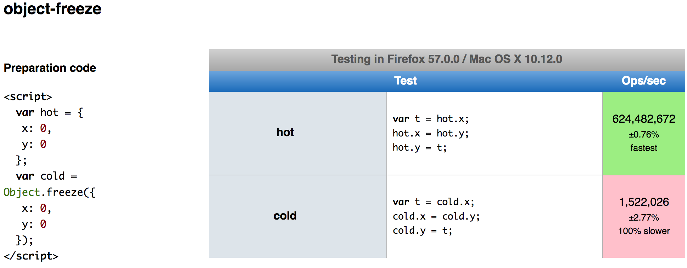
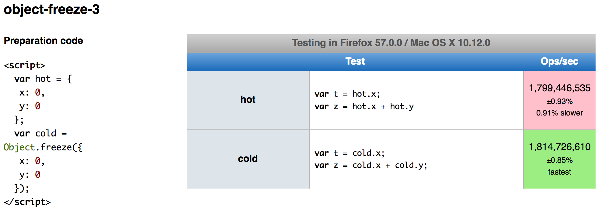

Frozen & Sealed Notations
A perception problem?
Object.freeze() is still quite slow.
negative performance implications with Object.freeze
The dreaded jsperf test (much 💕 @mathias)
Oh wait no...
The amount of energy necessary to refute bullshit is an order of magnitude bigger than to produce it.
Alberto Brandolini
Is this an ergonomics problem?
const foo = {
a: {
b: {
c: {
d: {
e: "some string!"
}
}
}
}
}
const foo = Object.freeze({
a: Object.freeze({
b: Object.freeze({
c: Object.freeze({
d: Object.freeze({
e: "some string!"
})
})
})
})
})

Conclusion
- Some aren't aware of them
- Some won't use them for too much typing
- Some believe they are slow
So let's make them a syntax feature
- Send a signal to developers that this is a key feature
- Solve the problem of verbosity
- Shift the conversation from "being too slow"
Object.freeze ==> {##}
const foo = Object.freeze({
a: Object.freeze({
b: Object.freeze({
c: Object.freeze({
d: Object.freeze({
e: Object.freeze([ "some string!" ])
})
})
})
})
})
const foo = {#
a: {#
b: {#
c: {#
d: {#
e: [# "some string!" #]
#}
#}
#}
#}
#}
Object.seal ==> {||}
const foo = Object.seal({
a: Object.seal({
b: Object.seal({
c: Object.seal({
d: Object.seal({
e: Object.seal(["some string!"])
})
})
})
})
})
const foo = {|
a: {|
b: {|
c: {|
d: {|
e: [| "some string!" |]
|}
|}
|}
|}
|}
But wait, there's more!
(Silently failing typos in options bags)
function ajax({ url, headers, onSuccess }) {
fetch(url, { headers }).then(onSuccess)
}
ajax({ 'http://example.com', onsuccess: console.log })
// No log :(, no errors
function ajax({| url, headers, onSuccess |}) {
fetch(url, { headers }).then(onSuccess)
}
ajax({ 'http://example.com', onsuccess: console.log })
// throws TypeError:
// `'cannot define property `onsuccess`. Object is not extensible'`
But wait, there's more!
(Object destructuring with immutable bindings)
function ajax({ url, headers, onSuccess }) {
// We can redfine `url` because its a mutable binding
url = new URL(url)
fetch(url, { headers }).then(onSuccess)
}
function ajax({# url, headers, onSuccess #}) {
// We cannot redfine `url` - it is now a `const` binding!
url = new URL(url)
fetch(url, { headers }).then(onSuccess)
}
// throws TypeError
// 'invalid assignment to const `url`'`
Maybe even more?
(Sealed function param bindings)
function add(a, b) {
return a + b
}
add(2, 2, 2) === 6 // ? Get back 4?!
function add(| a, b |) {
return a + b
}
add(2, 2, 2) === 6
// throws TypeError
// 'invalid third parameter, expected 2`
Maybe even more?
(Sealed or Frozen function param bindings)
function add1(a) {
a += 1
return a
}
add(1) === 2
function add1(# a #) {
a += 1 // throws TypeError `invalid assignment...`
return a
}
add1(1) === 2
Maybe even more?
(Extending syntax to general destructing for better type safety)
const foo = { a: 1, b: 2 }
const {a, b, c} = foo
// Silently sets `c` to undefined :(
const foo = { a: 1, b: 2 }
const {|a, b, c|} = foo
// Throws TypeError 'invalid assignment to unknown property c'
Plays nicely with other proposals!
(Pattern matching proposal)
hasJustBar = foo => match (foo) {
{| bar |}: true,
{ bar }: false,
}
hasJustBar({ bar: 1 }) === true
hasJustBar({ bar: 1, baz: 2 }) === false
Plays nicely with other proposals!
(Extending immutable objects)
const foo = Object.freeze({ a: 1 })
const bar = Object.freeze(Object.assign({}, foo, { a: 2 }))
const foo = {# a: 1 #}
const bar = {# ...foo, a: 2 #}